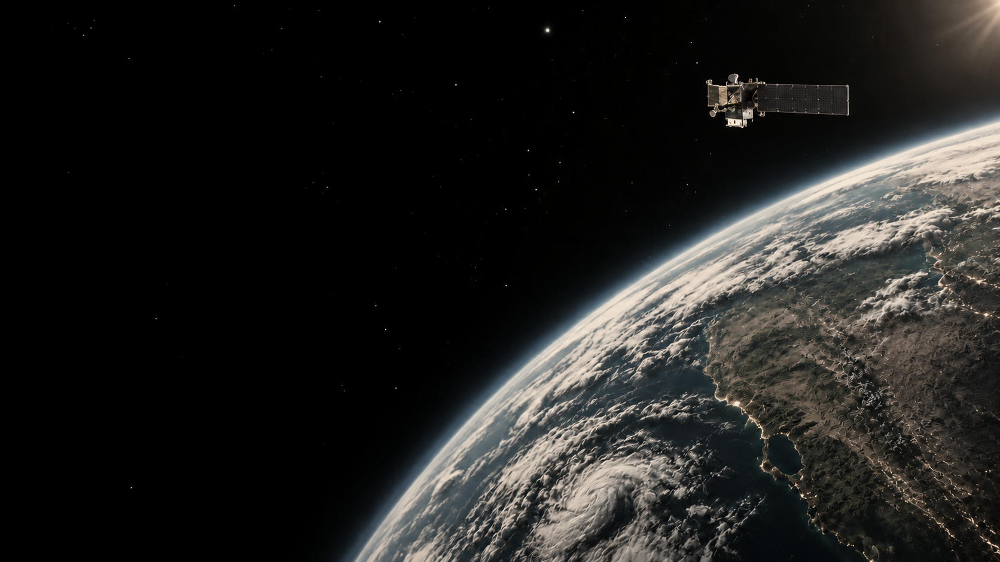
KOREAAEROSPACEUNIVERSITYSATECS LAB.
01 · 소개
차세대 SAR
특화 연구실
본 연구실은 우주항공 분야에서 활용되는 전자 시스템을 연구하고, 국내 우주·위성·항공 및 드론 분야의 첨단 기술 발전과 인재 양성에 기여하는 것을 목표로 한다.
SAR 시스템의 설계부터 제작·응용·연구까지, 실제 신호와 시스템을 바탕으로 고급 레이더 기술을 탐구한다.
주요 출연 기관 한국항공우주연구원, 국방과학연구소, 한국전자통신연구원(ETRI) 등 국가연구소와 LIG넥스원, 한화시스템(구 삼성탈레스), 현대로템, 한국항공우주산업, 쎄트렉아이 등 국내 기업
02 · 연구 분야
연구 분야


03 · 연구 과제
연구 과제
04 · 구성원
지도 교수
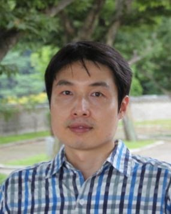
지도교수
이우경 Wookyung Lee
한국항공대학교 항공전자정보공학부 교수
주요 분야인공위성 시스템 · 위성 탑재체 · 레이다 시스템 · 드론/무인기 감시 · SAR 시스템 · 차세대 SAR 신호처리
- 1994KAIST 전자공학 학사
- 1996KAIST 전자공학 석사
- 1999영국 런던대학 UCL 전자공학 박사
- ~2002KAIST 인공위성연구센터 연구교수
- ~2004삼성종합기술원 연구원
- 2004.9~한국항공대학교 항공전자정보공학부 교수
구성원
박사과정
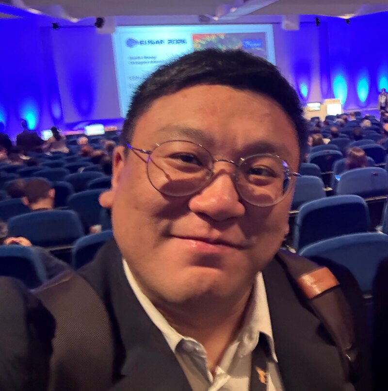
석사과정
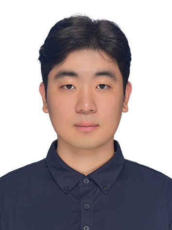
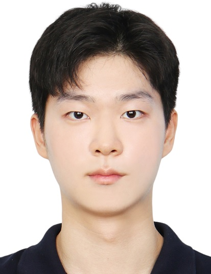
학부연구생
갤러리
실험 현장
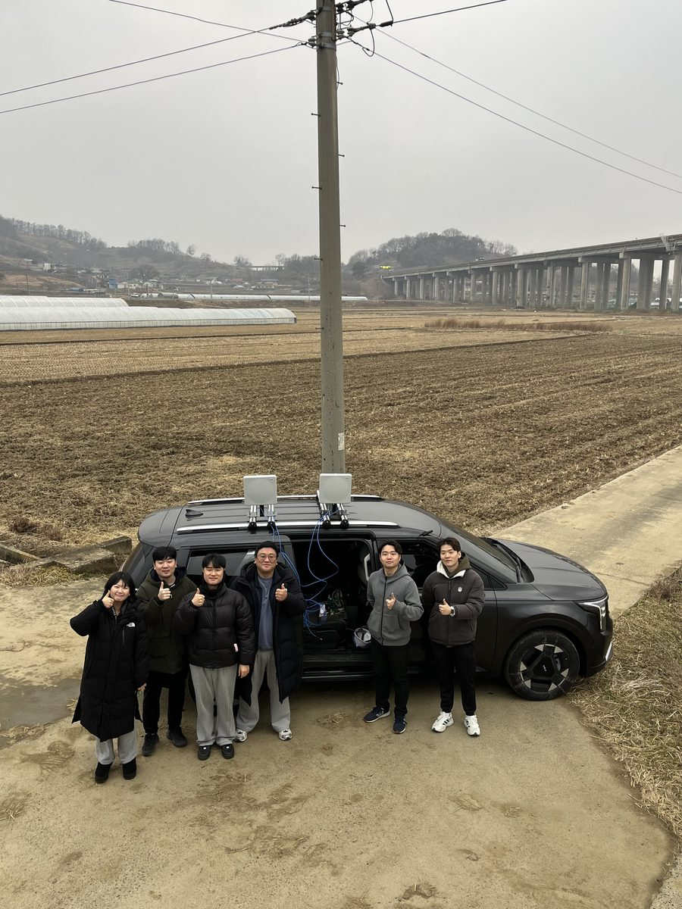
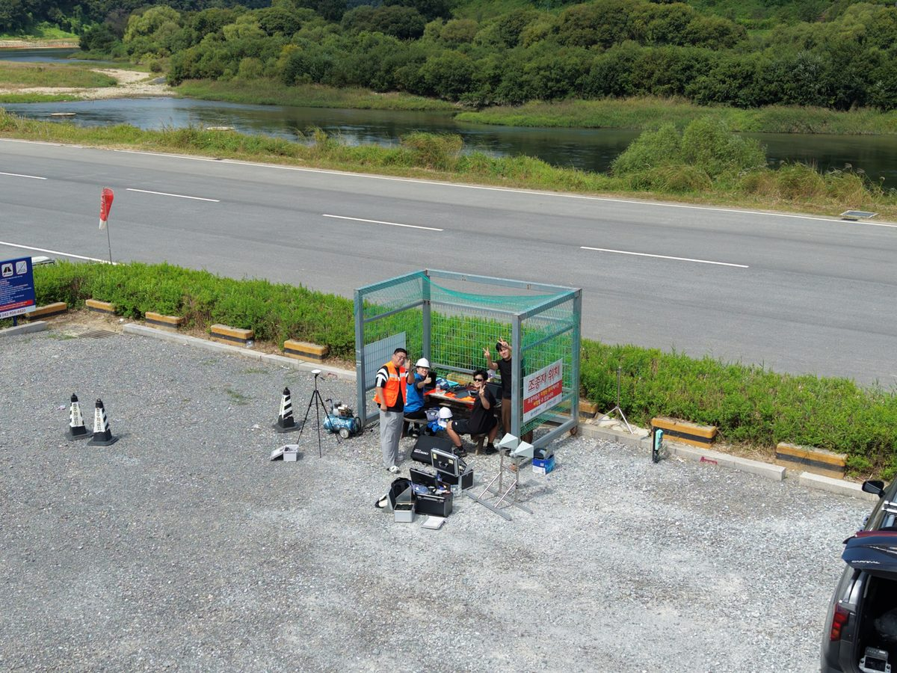
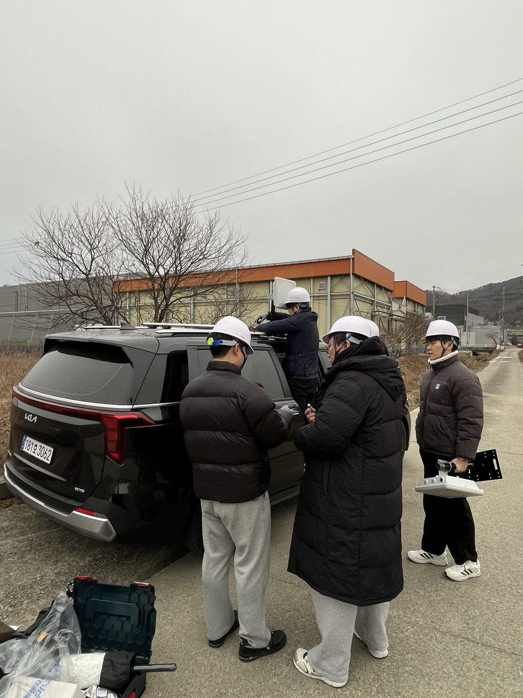
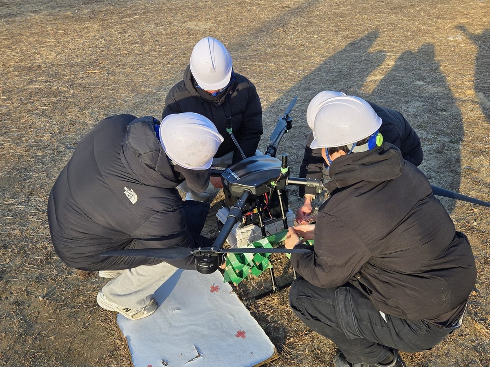
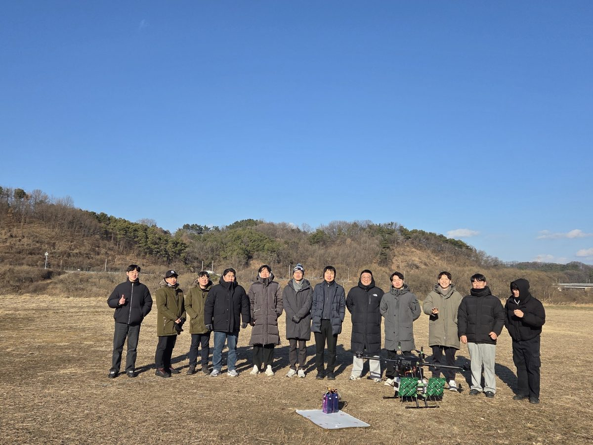
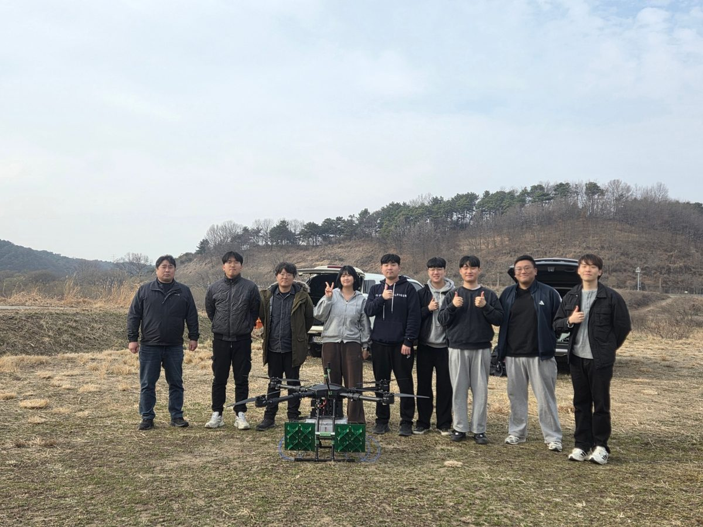
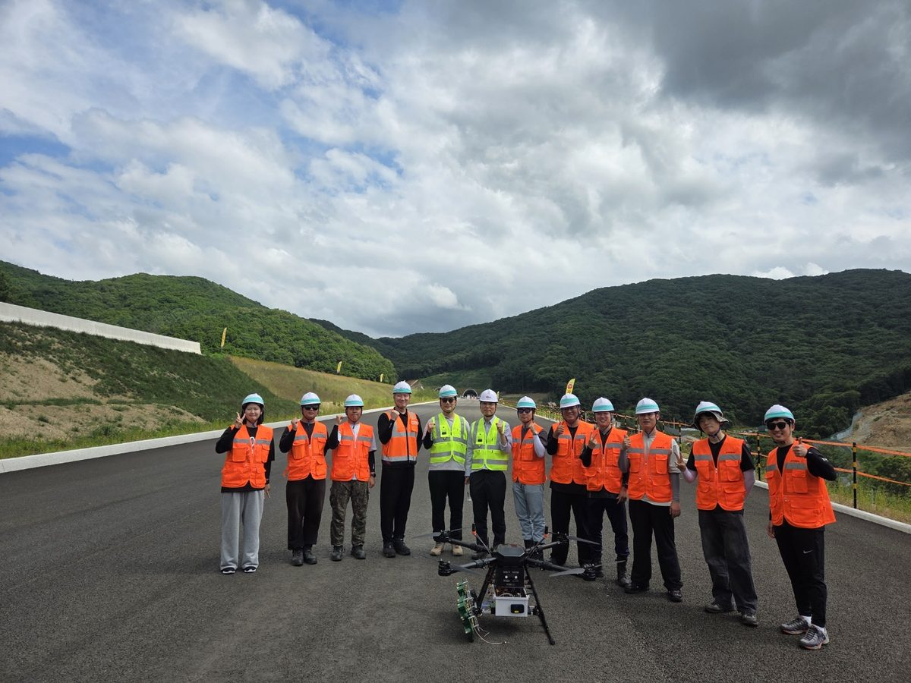
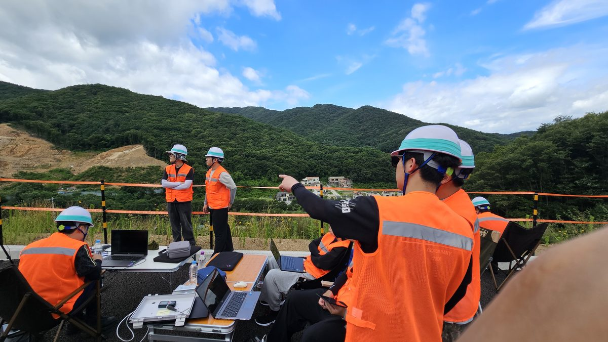
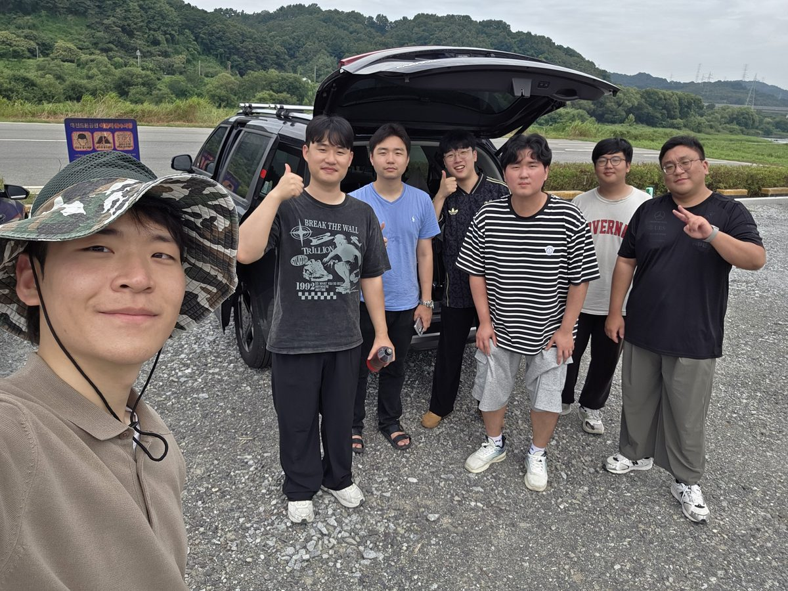
단체 사진
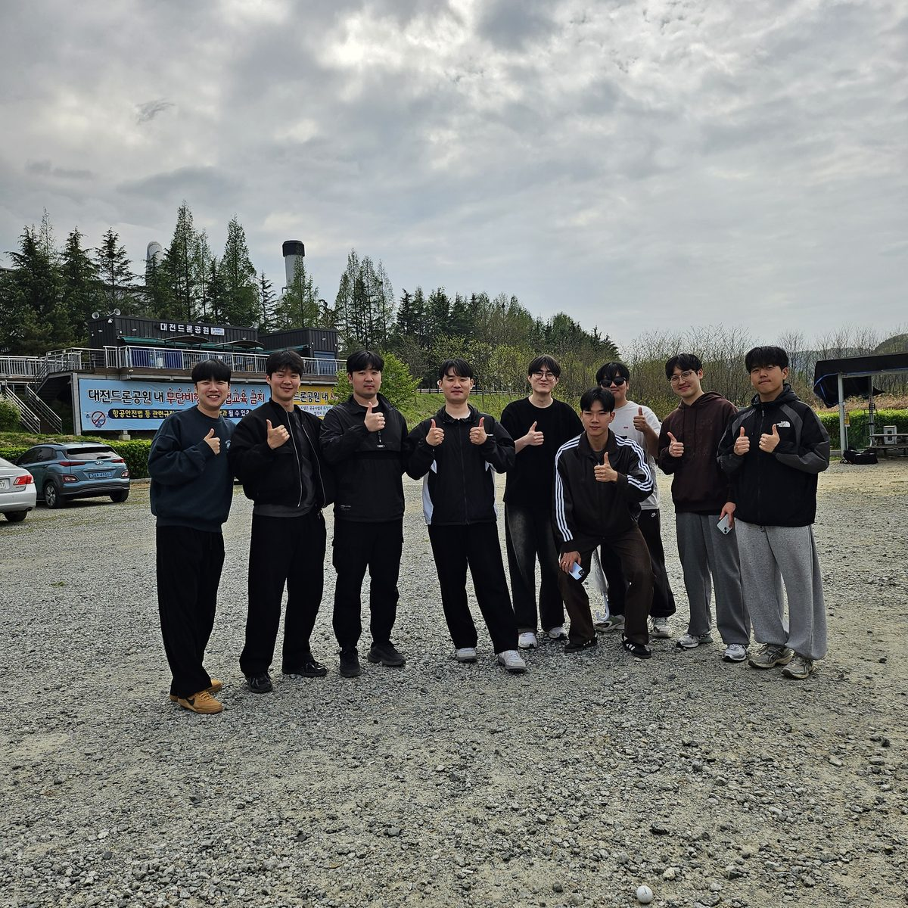
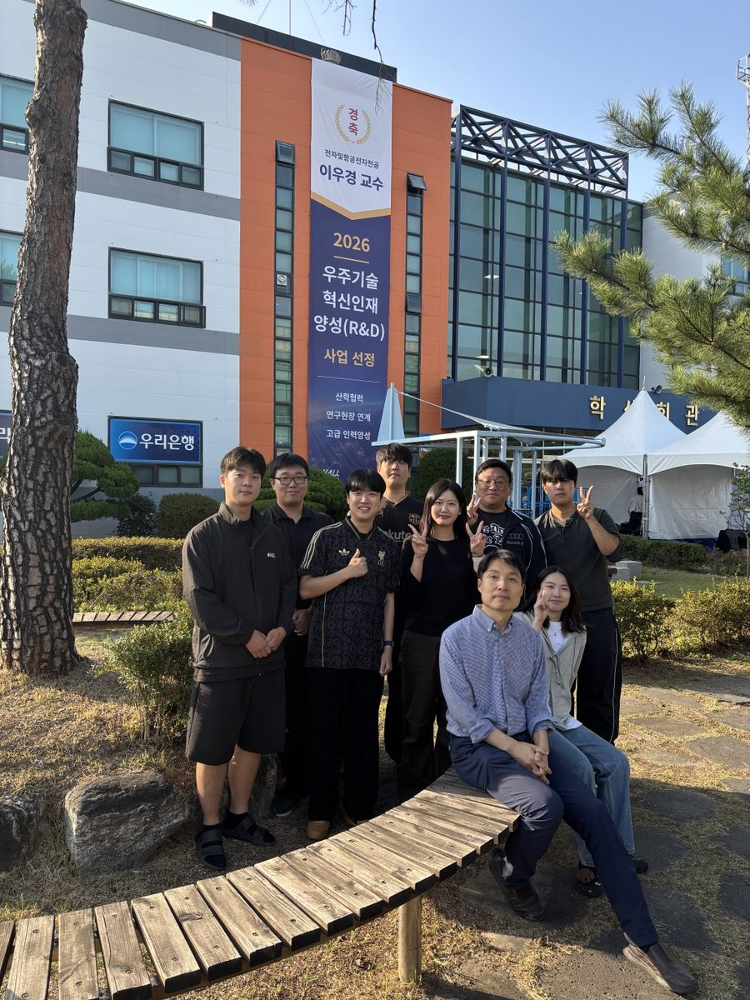
05 · 강의
강의
위성전자 시스템
인공위성 시스템의 설계 및 운용에 대하여 전반적으로 이해할 수 있도록 기초 지식을 전달한다. 인공위성 제작에 소요되는 전자 요소 기술을 소개하고 설계시 필요한 기술적 사항들을 이해한다. 실제로 운용되고 있는 인공위성의 사례들을 연구하여 향후 국내외의 인공위성 개발 흐름을 이해한다.
강의 내용·교재
- 교재: Satellite Technology (Anil K. Maini, Wiley)
- 참고도서: Satellite Communications Systems (G. Maral, Wiley); Satellite Technology and its Applications (Chetty, TAB Professional)
- 강의 내용: Introduction: What is satellite? · Satellite System Overview · Satellite Orbit · Space Environment and Orbits · Satellite Mission Design · Telemetry, Tracking and Command · Satellite Subsystem · Satellite Communication System · Communication satellite · Remote Sensing Satellite · Small Satellite Design · Satellite system design simulation
전자기학 1
전자기학의 기본 이론을 습득한다. 전자기학을 이해할 수 있는 벡터 기초를 배우고 정전계 전기장을 이해할 수 있도록 한다. 전자파 흐름을 이해할 수 있도록 키르히호프, 포아송 법칙 등의 기본 법칙 및 특성을 이해한다.
강의 내용·교재
- 교재: Field and Wave Electromagnetics (David K. Cheng, Wiley)
- 참고도서: Cheng의 전자기학 Field and Wave Electromagnetics (이택경 외 역, 성진미디어)
- 강의 내용: 벡터와 벡터 미적분의 기초 · Vector Analysis · Static Electric Field · Solution of Electrostatic Problems · Steady Electric Currents · Static Magnetic Fields
레이다 공학
레이다 공학은 전자 및 통신의 기본 이론과 지식을 활용한 통합 시스템 공학이다. 본 강의에서는 레이다 원리에서 응용에 이르기까지 레이다 개념, 레이다 시스템, 레이다 안테나 및 송수신기, 레이다 방정식, 표적 및 클러터 특성, 레이다 파형, 표적 탐지 및 레이다 신호처리, 고해상도 레이다 영상 등을 학습한다. 레이다는 전천후 전자눈으로서 항공우주, 국방, 교통, 기상, 도로 교통, 자동차, 의료 영상 등에 활용되며, 산업체 취업 및 대학원 진학에 필요한 기본 지식을 습득한다.
강의 내용·교재
- 참고도서: Radar – Principles, Technology, Applications (Bryan Edde, Prentice Hall); Introduction to Radar Systems (M. Skolnik, McGraw Hill); Radar System Design and Analysis with Matlab (B. R. Mahafza, CRC Press)
- 강의 내용: 레이다 개요 – 레이다 개념, 레이다 분류 · 레이다 기본 원리 – 레이다 표적정보, 레이다 시스템 소개 · 레이다 시스템 I – 시스템 파라미터, 송수신기 파라미터 · 레이다 시스템 II – 안테나 파라미터, 신호 처리기 파라미터 · 레이다 방정식 I – 기본 방정식 유도, 파형별 방정식 · 레이다 방정식 II – 임무별 방정식, 전파 손실 특성 · 레이다 표적 특성 – RCS 반사 특성, RCS 모델 특성 · 레이다 클러터 – 클러터 특성, 진폭 및 스펙트럼 특성 · 레이다 표적 탐지 I – 탐지 모델, 펄스 누적 · 레이다 표적 탐지 II – 탐지 확률, CFAR 탐지기 · 레이다 파형 – 파형 종류, 레이다 PRF · 레이다 신호 처리 – 신호 샘플링, 정합 필터, 클러터 제거 필터, 펄스 도플러 처리
신호 및 시스템
전자공학도의 필수적인 기초 과목으로 공학수학과 회로이론을 기초로 하여 전기적 신호 해석 방법과 시스템 관점에서 신호의 입출력 관계를 연속 및 이산 시간 영역과 주파수 영역에서 분석하고 응용할 수 있는 능력을 배양한다. 주요 내용은 신호의 표현, 시스템 모델링, 연속 시간 선형시스템에서의 시간영역 해석과 주파수영역 Laplace Transform 해석, 이산선형시스템의 시간영역 해석과 주파수영역 Z-Transform 해석, 시스템의 주파수 해석을 위한 Fourier Series 및 Fourier Transform과 Discrete Fourier Transform 해석방법 등을 강의한다.
강의 내용·교재
- 강의 내용: Signals and Systems · Time-domain analysis of continuous-time systems · Continuous-time system analysis using the Laplace transform · Time-domain analysis of discrete-time systems · Discrete-time system analysis using the z-transform · Continuous-time signal analysis: the Fourier series · Sampling: the bridge from continuous to discrete
06 · 연구실적
연구실적
07 · 연락처
함께 연구할
다음 사람을 기다립니다.
학부연구생 및 대학원 진학을 원하는 인재를 상시 모집합니다. 국방우주·위성레이다 전문가를 꿈꾸는 학생을 언제든지 환영합니다. 국내 기업·연구소와 수행하는 공동협력 과제에 참여할 기회와 장학금 혜택을 제공합니다.
- 전화
- 02) 300-0149
- 주소
- 경기도 고양시 덕양구 항공대학로 76
담당교수 Office: 전자관 319호
위성전자실험실: 연구동 403호
차세대 SAR 특화연구실: 연구동 410호
인공지능 및 레이다 실험실: 전자관 321호 - 교통
- 경의중앙선 화전역
버스 항공대학교(19-500)·양지말(19-509) 정류장 — 7726·7727·7728(지선), 707(간선), 72(일반), 022(마을)